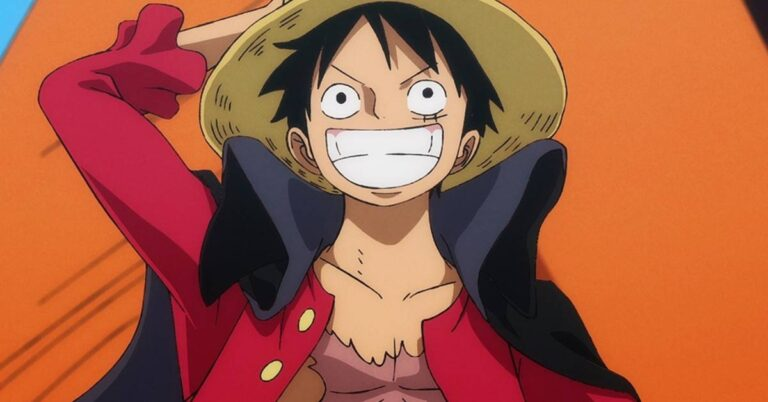
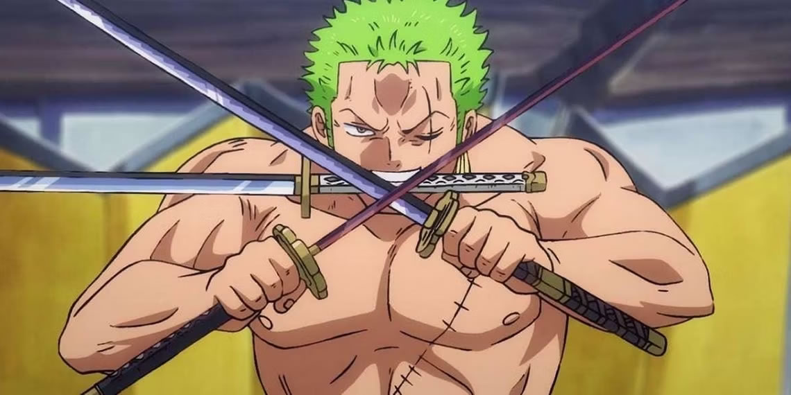

Monkey D. Luffy
Luffy é o capitão do bando dos chapéus de palha, quando era criança
comeu um
fruto proibido chamado de Gomu Gomu no Mi que lhe deu
poderes de se esticar
como se fosse um homem-borracha, Ele tem o sonho de um dia se tornar
o rei dos
piratas tem como inspiração o pirata que foi por todos considerado o
rei, Gol D. Roger,
ele conquistou fama, poder, riquezas e liberdade e para superá-lo
Luffy terá que
encontrar o One Piece, o tesouro lendário que está localizado na
última ilha da Grand Line,
para que possa encontrar o tesouro deixado por Roger, Luffy montou
sua tripulação
e juntos estão enfrentando os obstáculos do
caminho para enfim encontrar o One Piece.
Gomu Gomu no Mi:


Roronoa Zoro
No início da história Zoro era um famoso caçador de piratas que havia
sido
capturado pela marinha. Ele foi o primeiro membro do bando dos chapéus
de
palha, tem o sonho de se tornar o maior espadachim do mundo e para que
isso
aconteça ele terá que derrotar Dracule Mihawk que por sua vez ja o
derrotou uma
vez, esta derrota fez Zoro jurar para Luffy que
ficaria mais forte e que nunca mais
seria derrotado, desde então ele vem treinando e se fortalencedo cada
vez mais
para derrotar seu maior rival, pois esta foi a promessa
feita quando criança com
sua melhor amiga.
Santoryu - Estilo três espadas

Vinsmoke Sanji
Em primeiro momento sanji aparece no anime como um cozinheiro no
barco
restaurante Baratie, depois descobrimos a triste história de seu
naufrágio quando
criança, sendo resgatado por Zeff o dono do restaurante que o ensinou
a valorizar
o alimento, pois quando naufragram ficaram presos em uma ilha por
muitos dias
sem alimentos, Sanji foi o quarto membro da tripulação, ele esta
sempre
rivalizando com Zoro e a força de ambos é bem semelhante, após o Luffy
os dois são os mais poderosos da tripulação.
Diable Jambe - Chute de Fogo